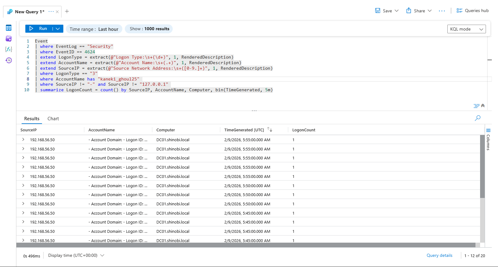
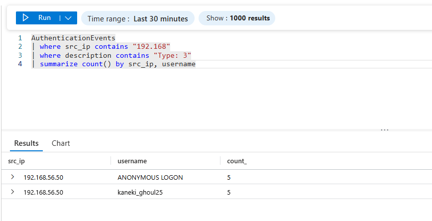

Detection & Telemetry (NetExec LDAP)
Attack Vector: The attacker used NetExec to perform authenticated LDAP enumeration. Unlike manual exploration, NetExec opens a new authentication session for every individual module (User Enum, Password Policy, MAQ check), creating a distinct and noisy pattern of Logon Type 3 (Network) events. Data Source: Event Table (Windows Security Log).
Objective: Detect the rapid succession of successful network logons characteristic of automated tools like NetExec or BloodHound. Logic: We filter for Event ID 4624 where the Logon Type is 3 (Network Logon). We then group these events by Source IP and User to identify anomalies where a single user authenticates dozens of times within a 5-minute window.
KQL Query:
Event
| where EventLog == "Security"
| where EventID == 4624
| extend LogonType = extract(@"Logon Type:\s+(\d+)", 1, RenderedDescription)
| extend AccountName = extract(@"Account Name:\s+(.+)", 1, RenderedDescription)
| extend SourceIP = extract(@"Source Network Address:\s+([0-9.]+)", 1, RenderedDescription)
| where LogonType == "3"
| where AccountName has "kaneki_ghoul25"
| where SourceIP != "-" and SourceIP != "127.0.0.1"
| summarize LogonCount = count() by SourceIP, AccountName, Computer, bin(TimeGenerated, 5m)
Analysis:
192.168.56.50) generated a high volume of logons using the compromised kaneki_ghoul25 account.
Objective: Summarize the attack traffic to attribute the malicious activity to a specific host on the network. Logic: By aggregating the count of events by src_ip, we can instantly spot the "Top Talker" during the incident window.
KQL Query (Summary View):
Event
| where EventID == 4624
| extend SourceIP = extract(@"Source Network Address:\s+([0-9.]+)", 1, RenderedDescription)
| where SourceIP contains "192.168.56"
| summarize count() by SourceIP, AccountName
Findings:
192.168.56.50 (Kali Linux).kaneki_ghoul25..50 is actively abusing the credentials of kaneki_ghoul25 to perform reconnaissance against the Domain Controller.
{kind=link}
{kind=link}